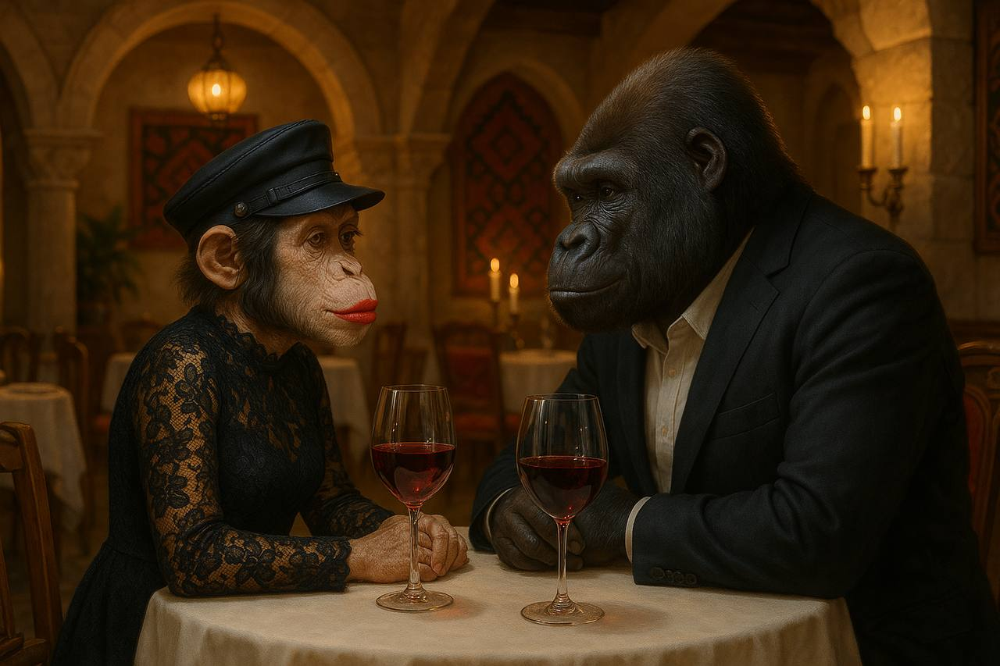

В якомусь грузінскому рісторані, назву якого Алєговна так і не змогла вимовити, її вже чекав Лєонід.
У воздусі пахло бараниною, кіндзмаркулі і сигарами, навєрно від Льоні.
Алєговна була в красівом гепюровом платті і в кепі від Багінського.
Сівши напроти, вона змогла нарешті роздивитись наскільки вони були непохожими блізнєцами з Едіком. В глазах у Лєоніда відчувалась увєрєность. Увєрєность у всьом !
- Жанночка, ви прекрасно виглядітє.
- Пасіба, Лєонід. Чого ви мене покликали в це завєдєніє? Про що ви хтіли говорити ?
- О нас з тобою, Жанночка. Після нашой встрєчі я не можу ні про кого думать кромє Вас ! Ви дєвушка нєзємной красоти !
В цю мить офіціант через увесь ресторан на великій тєлєжці віз букєт лілових роз, в залі заіграла пісня Увітні Хʼюстон «Ай віл олвейз лав ю»…
В Алєговни був шок.
- Жанночка, - промовив Лєонід, глядя в глаза Алєговни, тримаючи в руках коробочку з кольцом, на якому був агромний камєнь, - будь моєй …
Глухий постріл пронзив повітря, Алєговна почула чийсь крик, з ресторану почали вибігати люди. Вона глянула на Льоню - він лежав на підлозі, а навколо - багряна кров.
Жанна вскочила, присіла біля Лєоніда і зрозуміла, що у нього стріляли, куля пробила плече.
- Скору, визивайте скору ! - кричала вона щосили, обіймаючи обличчя Лєоніда.
Алєговна сиділа на підлозі, руками закриваючи рану на плечі Льоні, сльози розмазали увесь макіяж… на фоні було чутно «Ааааааааай від олвейз лав юююююю….»